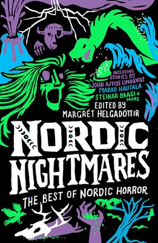

Published Translations
In addition to the published works below, I regularly work directly with authors or their agents and translate samples, partial manuscripts, or even entire manuscripts from Finnish to English for promotional purposes. Please get in touch if you’d like a translated sample of your comic book, YA novel, literary fiction, horror story–or anything in between!
Nordic Nightmares: The Best of Nordic Horror

Short Story Collection
My translation, “The Silence of the Host,” (“Saurin hiljaisuus” by Marko Hautala), is included in this bone-chilling anthology.
Twenty nightmarish horror tales featuring folkloric beasts, apocalyptic disasters, and psychological terrors are brought together in a collection sure to keep readers up at night, from the very best voices in contemporary Nordic fiction. - Simon and Schuster, publisher
The Black Tounge
Fiction
“If you’re up for an adventure, try reading The Black Tongue alone in a hotel room with one flickering light, like I did. I guarantee at least one nightmare.” —Leah Dearborn, LitReactor Magazine
The character of Granny Hatchet carries such a chill that the temperature in the pit of a reader’s stomach seems to go down a few degrees. - Antti Berg, Helsingin Sanomat newspaper, Finland
The Bodyguard
Fiction
Lehtolainen is particularly skilled at including topical elements from politics with a touch of humor and irony. Uusi Suomi newspaper, Finland
Despite the fact that this is a book narrated by a hardbitten bodyguard and involving lots of murders and political intrigue, there's a warmth to it - so many people are genuinely good, or kind, or well-intentioned - and you're left with a sense of optimism. Review by Nightwitch on Goodreads
The Lion Of Justice
Fiction
The Lion of Justice captures its readers… pulls them effortlessly into its fast-paced, intricate plot… This thriller keeps readers in its clutches. Pohjolan työ newspaper, Finland
The Bodyguard trilogy presents another strong female character Hilja Ilveskero who is absolutely fabulous!!! Great entertaining crime fiction with humour! Review by Outi Mäkinen, Goodreads
The Devil's Club
Fiction
Extremely gripping and exciting, all the way to the end. Satu via Storytel